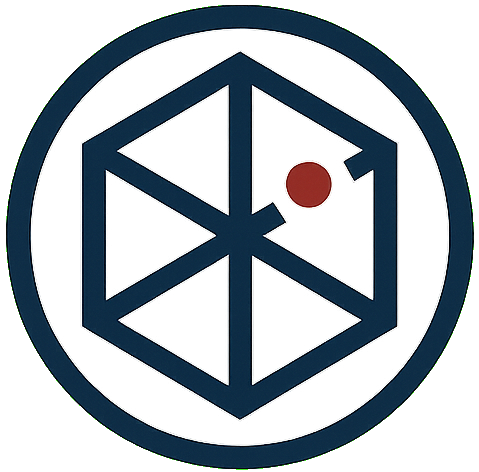

Dimensional Section / X:██ Y:██ Z:0.0
Welcome to …Arca Hortus
箱庭次元研究機構
創作と探究のための小さな次元（Dimension）を構築・記録することを目的とした実験的プロジェクトです。
貴方の好奇心は満たされていますか？

DIMENSIONAL STABILITY97.3%
OBSERVER LINKSECURE
CONTAINMENT3 BREACHES
MEMETIC AGENT
LOCAL TIME--:--:--
Access Terminals
接続端末
05 GATEWAYS ／ 3 OPEN ／ 2 RESTRICTED
GATE 00OPEN
About機構概要
組織憲章、主要事業領域、名称の定義、長期的展望。
ACCESS →
GATE 01OPEN
TopPicks推奨品録
運営および管理者の生存維持において、高い有用性が認められた物品の記録。
ACCESS →
GATE 02OPEN
Nexus外部接続拠点
主要作品群、外部通信経路、研究支援への接続。
ACCESS →
GATE 03LV.4
Archive記録保管庫
収蔵記録の閲覧領域。権限区分 LV.4 以上の照合を要する。
ACCESS →
GATE 04EXP
Laboratory実験区画
試験運用中の観測装置群。挙動は保証されない。
ACCESS →
▲ NOTICE
当領域の閲覧記録は自動的にへ送信されます。
未認可の深層アクセスは処分の対象となります。
Affiliated Organizations
提携・協力機関
06 ENTITIES LINKED